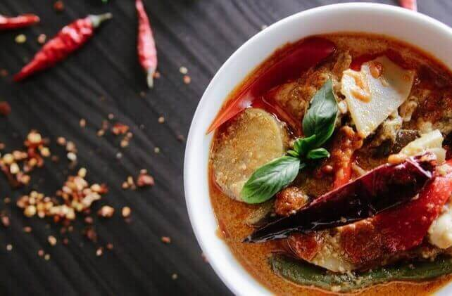

2018 Multicultural Feature:
The Tastes of New Zealand
These are some of the traditional New Zealand recipes that Celebrate multiculturalism will feature at this year’s festival. Try your hand at one of these favourites!
March features:
New Zealand Pavlova
Recipe By: Cari Heppell
This dessert is absolutely gorgeous! It is easy to make, and simply heaven! Use different fruit combinations for variety - strawberries and blueberries, kiwi and raspberries, nectarines and bananas - anything goes.
Ingredients
- 3 egg whites
- 1/3 cup super fine sugar
- 1 teaspoon distilled white vinegar
- 1 tablespoon boiling water
- 2 cups heavy whipping cream
- 1/4 cup confectioners' sugar
- 1 teaspoon vanilla extract
- 2 cups sliced fresh fruit
Directions
- Preheat oven to 475 degrees F (245 degrees C). Cover a baking sheet with foil, and spray lightly with cooking spray.
- In a large bowl, beat the egg whites to form stiff peaks. Add white sugar slowly, and continue beating. When egg whites are very stiff, add vinegar and boiling water. Continue beating until glossy surface is beginning to fade, and mixture is very stiff. Pile meringue onto prepared baking sheet. Shape into a circle 1 1/2 inches thick. Form a slight dip in the center, and make the sides slightly higher.
- Place meringue in the oven, shut the door, and turn the heat off. Leave in the oven for one hour. Check the texture of the meringue; it should be hard with no soft spots. If soft in the center, heat oven to 250 degrees F (120 degrees C). Place meringue back into the oven, and turn off the heat. Cool when done. Transfer onto a serving platter.
- Whip the cream until just stiff. Beat in vanilla and confectioners' sugar. Pile the whipped cream onto the meringue. Arrange the fruit on top of the whipped cream, and serve.
Recipe can be found at: http://allrecipes.com/recipe/12249/new-zealand-pavlova/
Dad's New Zealand Mince Stew
Recipe By: Kat
Hmmmmm... I'm not sure if it's chili, or stew or a shepherds pie without the crust, but there is nothing like it over some toast on a cold night, rich and hearty, just downright yummy if you ask me. We always experiment a little with our ingredients but it always comes out great. I'm thinking of going and making a pot right now, oh and it's even better the days after you make it, just go ahead and microwave some, put it on baked potatoes, roll it up in bread, use it anyway you like.
Ingredients
- 1 tablespoon vegetable oil
- 3 large onions, sliced
- 2 pounds ground beef
- 2 cloves garlic, chopped
- 1 cup water
- 2 cups ketchup
- 1 cup beef stock
- 2 tablespoons teriyaki sauce
- 3 tablespoons black pepper
- 1 tablespoon curry powder
- 1 teaspoon garlic powder
- 1 tablespoon onion powder
- 1 tablespoon all-purpose flour
- 1/2 cup water

Directions
- Heat oil in a large pot over medium heat. Saute onions until browned; remove from pot, and set aside. Add ground beef to pot, and cook until evenly brown. Add garlic, and cook for 2 minutes. Stir in browned onions, and cook on high heat for 3 to 5 minutes. Stir in 1 cup of water. Reduce heat, cover, and simmer for 20 minutes.
- Stir in ketchup, beef stock, and teriyaki sauce. Season with pepper, curry powder, garlic powder, and onion powder. Cover, and simmer for about 2 hours.
- Mix together 1 tablespoon flour and 1/2 cup water. Stir into stew, and cook until thickened.
Recipe can be found at: http://allrecipes.com/recipe/49560/dads-new-zealand-mince-stew/
Other feature recipes include:
ANZAC biscuits (April feature)
Kumara soup (April feature)
Blackberry bread pudding (May feature)
Macaroni cheese bake (May feature)
Cheese pies (June feature)
Tararura biscuits (June feature)
Afghan biscuits (July feature)
Cervena (venison) ragout (July feature)
Kumara salad (August feature)
Ginger beer (August feature)